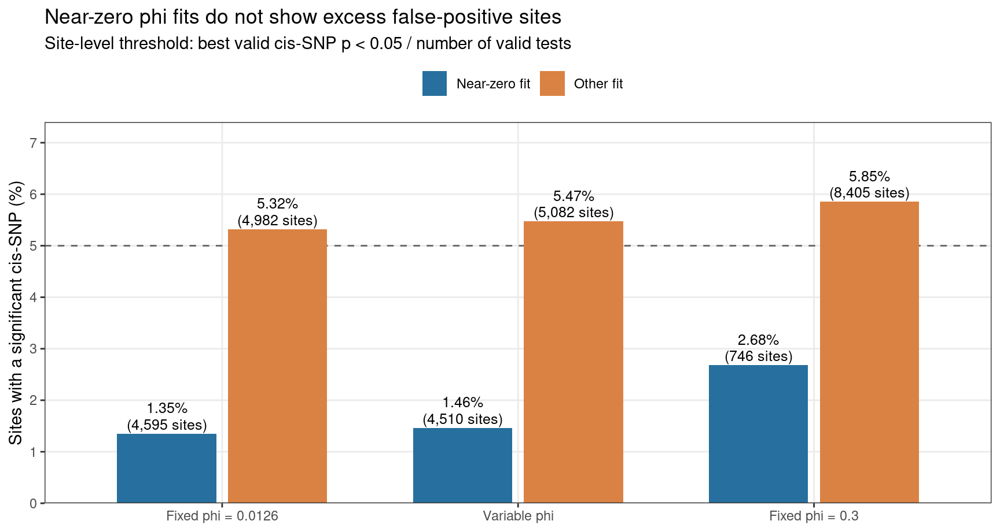
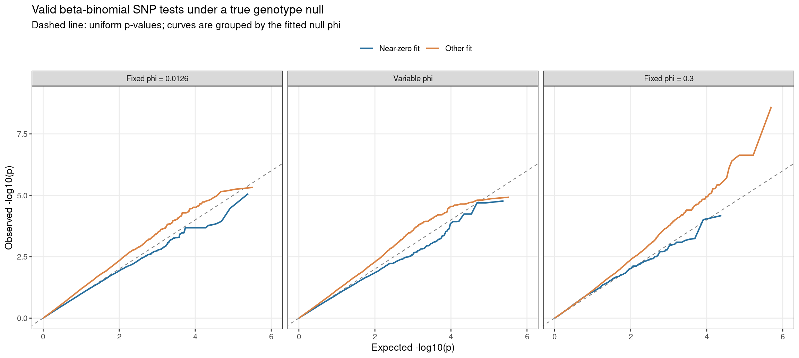

Last updated: 2026-09-30
Checks: 6 1
Knit directory: pumseq/
This reproducible R Markdown analysis was created with workflowr (version 1.7.1). The Checks tab describes the reproducibility checks that were applied when the results were created. The Past versions tab lists the development history.
The R Markdown file has unstaged changes. To know which version of
the R Markdown file created these results, you’ll want to first commit
it to the Git repo. If you’re still working on the analysis, you can
ignore this warning. When you’re finished, you can run
wflow_publish to commit the R Markdown file and build the
HTML.
Great job! The global environment was empty. Objects defined in the global environment can affect the analysis in your R Markdown file in unknown ways. For reproduciblity it’s best to always run the code in an empty environment.
The command set.seed(20260202) was run prior to running
the code in the R Markdown file. Setting a seed ensures that any results
that rely on randomness, e.g. subsampling or permutations, are
reproducible.
Great job! Recording the operating system, R version, and package versions is critical for reproducibility.
Nice! There were no cached chunks for this analysis, so you can be confident that you successfully produced the results during this run.
Great job! Using relative paths to the files within your workflowr project makes it easier to run your code on other machines.
Great! You are using Git for version control. Tracking code development and connecting the code version to the results is critical for reproducibility.
The results in this page were generated with repository version d04dc65. See the Past versions tab to see a history of the changes made to the R Markdown and HTML files.
Note that you need to be careful to ensure that all relevant files for
the analysis have been committed to Git prior to generating the results
(you can use wflow_publish or
wflow_git_commit). workflowr only checks the R Markdown
file, but you know if there are other scripts or data files that it
depends on. Below is the status of the Git repository when the results
were generated:
Ignored files:
Ignored: analysis/qtl_mapping_summary_cache/
Unstaged changes:
Modified: analysis/index.Rmd
Modified: analysis/qtl_mapping_betabinomial_null_simulation.Rmd
Note that any generated files, e.g. HTML, png, CSS, etc., are not included in this status report because it is ok for generated content to have uncommitted changes.
These are the previous versions of the repository in which changes were
made to the R Markdown
(analysis/qtl_mapping_betabinomial_null_simulation.Rmd) and
HTML (docs/qtl_mapping_betabinomial_null_simulation.html)
files. If you’ve configured a remote Git repository (see
?wflow_git_remote), click on the hyperlinks in the table
below to view the files as they were in that past version.
| File | Version | Author | Date | Message |
|---|---|---|---|---|
| Rmd | d04dc65 | XSun | 2026-09-29 | update |
| html | d04dc65 | XSun | 2026-09-29 | update |
suppressMessages({ library(data.table); library(ggplot2) })
knitr::opts_chunk$set(echo = FALSE, warning = FALSE, message = FALSE,
fig.align = "center", fig.width = 10)
BASE <- "/project/xinhe/xsun/pumseq/pumseq_processed/psi_qtl/qtl_betabinomial/null_simulation"
S <- fread(file.path(BASE, "null_sites.txt.gz"))
P <- fread(file.path(BASE, "null_pvals.txt.gz"))
SCEN <- c("phi_0.0126", "phi_spread", "phi_0.3")
SLAB <- c("Fixed phi = 0.0126", "Variable phi", "Fixed phi = 0.3")
S[, scenario_label := factor(SLAB[match(scenario, SCEN)], levels = SLAB)]
S[, collapsed := fifelse(is.finite(phi_hat) & phi_hat < phi_true / 10,
"Near-zero fit", "Other fit",
na = NA_character_)]
P <- merge(P, S[, .(scenario, sid, scenario_label, collapsed)],
by = c("scenario", "sid"), all.x = TRUE)
P <- P[is.finite(p_bb) & p_bb >= 0 & p_bb <= 1]
P[, scenario_label := factor(scenario_label, levels = SLAB)]
P[, collapsed := factor(collapsed, levels = c("Near-zero fit", "Other fit"))]
site_min <- P[, .(min_p = min(p_bb), tests = .N),
by = .(scenario, sid, scenario_label, collapsed)]
site_min[, hit := min_p < 0.05 / tests]
site_rate <- site_min[, .(sites = .N, hits = sum(hit), rate = mean(hit)),
by = .(scenario, scenario_label, collapsed)]
site_rate[, scenario_label := factor(scenario_label, levels = SLAB)]
site_rate[, collapsed := factor(collapsed, levels = c("Near-zero fit", "Other fit"))]
setorder(site_rate, scenario_label, collapsed)
fmt_n <- function(x) format(x, big.mark = ",", trim = TRUE, scientific = FALSE)In the dispersion-recovery analysis, we found that the estimated beta-binomial dispersion (phi) can be close to zero at a site even when the true phi is positive. Could those sites produce false pU-QTLs? We generated counts without using genotype, then tested those counts against the real genotypes using the production QTL test.
Main result: Near-zero phi fits had fewer site-level false positives than other fits in all three settings: 1.35% vs 5.32% with phi fixed at 0.0126, 1.46% vs 5.47% with phi varying across sites, and 2.68% vs 5.85% with phi fixed at 0.3. The nominal site-level benchmark is at most 5%. Thus, these simulations do not implicate near-zero phi estimates as the source of false positives. The SNP-level small-p tail is still inflated, most strongly at phi = 0.3; this is a separate calibration concern.
For each eligible pU site, we followed the same steps:
We repeated this workflow with phi fixed at 0.0126, phi varying across sites with a log-normal distribution centred at 0.0126, and phi fixed at 0.3. Each setting used 10,051 eligible sites and 320,967 attempted SNP tests. We call a fit near-zero when its fitted null phi is less than one-tenth of the known true phi. This is a practical threshold, not a separate biological class.
The simulation was run by 43.null_simulation_fp.R through run_null_simulation.sbatch. Its output tables are in the project’s pumseq_processed/psi_qtl/qtl_betabinomial/null_simulation/ directory.
Genotype is not used to generate the simulated counts: the generator uses each cell line’s read depth, its expected pU rate from a model with no SNP term, and the chosen true phi. Genotype enters only afterward, in the QTL test. The true genotype effect in these simulated data is therefore zero, so any significant QTL call is a false positive. We summarize those calls in two ways:
Fits without a valid p-value are reported separately below; they are not counted as significant calls.

| Version | Author | Date |
|---|---|---|
| d04dc65 | XSun | 2026-09-29 |
| Scenario | Null phi fit | Significant / testable sites | Site-level false positives |
|---|---|---|---|
| Fixed phi = 0.0126 | Near-zero fit | 62 / 4,595 | 1.35% |
| Fixed phi = 0.0126 | Other fit | 265 / 4,982 | 5.32% |
| Variable phi | Near-zero fit | 66 / 4,510 | 1.46% |
| Variable phi | Other fit | 278 / 5,082 | 5.47% |
| Fixed phi = 0.3 | Near-zero fit | 20 / 746 | 2.68% |
| Fixed phi = 0.3 | Other fit | 492 / 8,405 | 5.85% |
At the low-phi setting, near-zero fits occurred in 4,632 of 10,051 eligible sites. A near-zero estimate is therefore common, but it is not where the excess false positives are concentrated.
The site-level result does not mean that every part of the beta-binomial null is perfectly calibrated. A uniform p-value distribution would follow the diagonal in the QQ plots. Points above the diagonal indicate more small p-values than expected. These plots use every valid beta-binomial test; only plotting points are thinned.

| Version | Author | Date |
|---|---|---|
| d04dc65 | XSun | 2026-09-29 |
| Scenario | Group | SNP tests | Median inflation (lambda) | Observed / expected p<1e-4 |
|---|---|---|---|---|
| Fixed phi = 0.0126 | All valid tests | 289,488 | 1.133 | 1.93x |
| Fixed phi = 0.0126 | Near-zero fit | 123,326 | 1.006 | 0.16x |
| Fixed phi = 0.0126 | Other fit | 166,162 | 1.244 | 3.25x |
| Variable phi | All valid tests | 289,519 | 1.082 | 2.35x |
| Variable phi | Near-zero fit | 120,768 | 0.967 | 0.58x |
| Variable phi | Other fit | 168,751 | 1.178 | 3.61x |
| Fixed phi = 0.3 | All valid tests | 262,808 | 1.126 | 6.51x |
| Fixed phi = 0.3 | Near-zero fit | 12,175 | 1.118 | 1.64x |
| Fixed phi = 0.3 | Other fit | 250,633 | 1.126 | 6.74x |
At true phi = 0.0126, the near-zero group has 0.16 times the expected number of p-values below 1e-4, while the other group has 3.25 times. Across all valid tests at that phi, the ratio is 1.93 times. At true phi = 0.3, the overall ratio rises to 6.51 times. Thus the near-zero fits are not the apparent source of the small-p excess, but the excess itself should not be ignored.
| Scenario | Eligible sites | Null-fit failures | Attempted SNP tests | Dropped SNP tests | Dropped test fraction |
|---|---|---|---|---|---|
| Fixed phi = 0.0126 | 10,051 | 430 | 320,967 | 31,479 | 9.8% |
| Variable phi | 10,051 | 396 | 320,967 | 31,448 | 9.8% |
| Fixed phi = 0.3 | 10,051 | 791 | 320,967 | 58,159 | 18.1% |
The false-positive rates above condition on a valid p-value. Roughly 10% of attempted tests were dropped in the low-phi settings, and 18% at phi = 0.3. A failed null fit has no p-value and cannot be counted as a significant QTL. This simulation uses one count realization per site and scenario, so a small difference from 5% should not be overinterpreted. It tests genotype-free data under the fitted beta-binomial mean structure and the observed coverage and cis-SNP patterns. It does not address every form of model misspecification in real pU counts.
In these null simulations, phi collapse itself did not generate excess false positives. We still need to understand the excess among non-collapsed fits, particularly when true phi is large, before describing the full QTL test as calibrated under all conditions.
R version 4.2.0 (2022-04-22)
Platform: x86_64-pc-linux-gnu (64-bit)
Running under: Red Hat Enterprise Linux 8.10 (Ootpa)
Matrix products: default
BLAS/LAPACK: /software/openblas-0.3.13-el8-x86_64/lib/libopenblas_skylakexp-r0.3.13.so
locale:
[1] LC_CTYPE=C.UTF-8 LC_NUMERIC=C LC_TIME=C.UTF-8
[4] LC_COLLATE=C.UTF-8 LC_MONETARY=C.UTF-8 LC_MESSAGES=C.UTF-8
[7] LC_PAPER=C.UTF-8 LC_NAME=C LC_ADDRESS=C
[10] LC_TELEPHONE=C LC_MEASUREMENT=C.UTF-8 LC_IDENTIFICATION=C
attached base packages:
[1] stats graphics grDevices utils datasets methods base
other attached packages:
[1] ggplot2_3.4.2 data.table_1.14.4 workflowr_1.7.1
loaded via a namespace (and not attached):
[1] tidyselect_1.2.0 xfun_0.59 bslib_0.3.1 colorspace_2.0-3
[5] vctrs_0.6.1 generics_0.1.3 htmltools_0.5.7 yaml_2.3.5
[9] utf8_1.2.2 rlang_1.1.2 R.oo_1.24.0 later_1.3.0
[13] pillar_1.9.0 jquerylib_0.1.4 glue_1.6.2 withr_2.5.0
[17] R.utils_2.11.0 lifecycle_1.0.4 stringr_1.5.0 munsell_0.5.0
[21] gtable_0.3.0 R.methodsS3_1.8.1 evaluate_0.15 labeling_0.4.2
[25] knitr_1.51 callr_3.7.0 fastmap_1.1.0 httpuv_1.6.5
[29] ps_1.7.0 fansi_1.0.3 Rcpp_1.1.1-1.1 promises_1.2.0.1
[33] scales_1.2.0 jsonlite_2.0.0 farver_2.1.0 otel_0.2.0
[37] fs_1.5.2 digest_0.6.29 stringi_1.7.6 processx_3.5.3
[41] dplyr_1.1.2 getPass_0.2-2 rprojroot_2.0.3 grid_4.2.0
[45] cli_3.6.2 tools_4.2.0 magrittr_2.0.3 sass_0.4.1
[49] tibble_3.2.1 whisker_0.4 pkgconfig_2.0.3 rmarkdown_2.31
[53] httr_1.4.8 rstudioapi_0.14 R6_2.5.1 git2r_0.30.1
[57] compiler_4.2.0